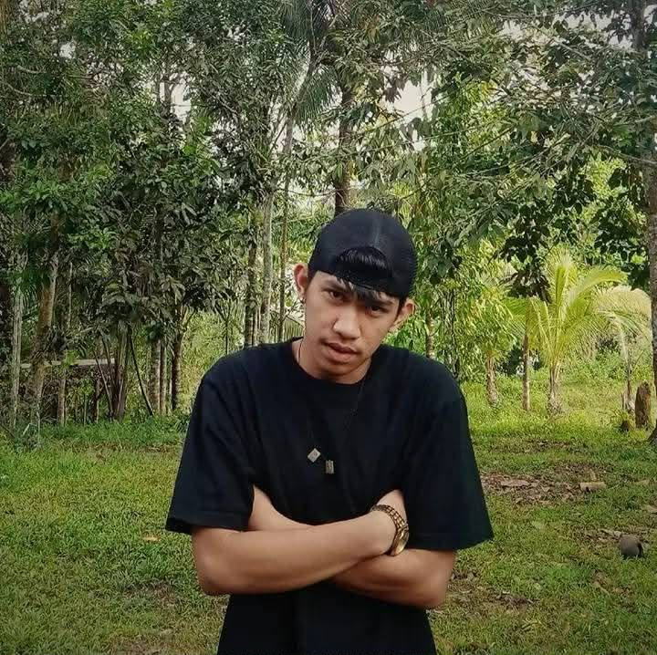

CS

Cristian S. Salinas
PROJECT MANAGER / FULLSTACK DEVELOPERLed the project management efforts by coordinating schedules and deliverables across all phases, while simultaneously contributing to both frontend and backend development as a full-stack developer.